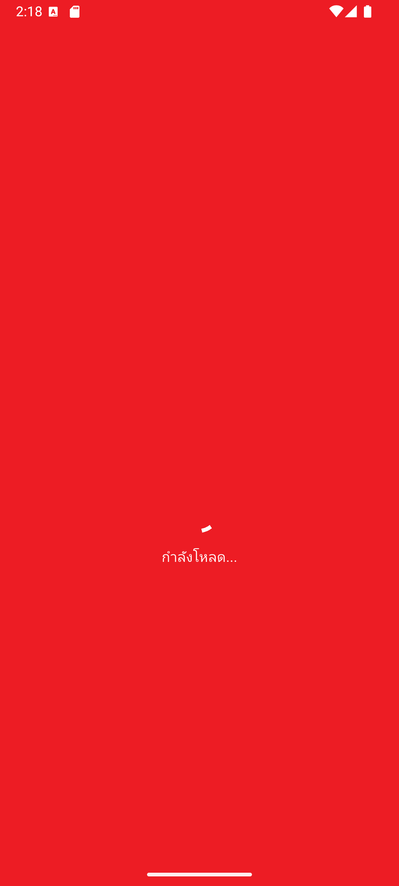
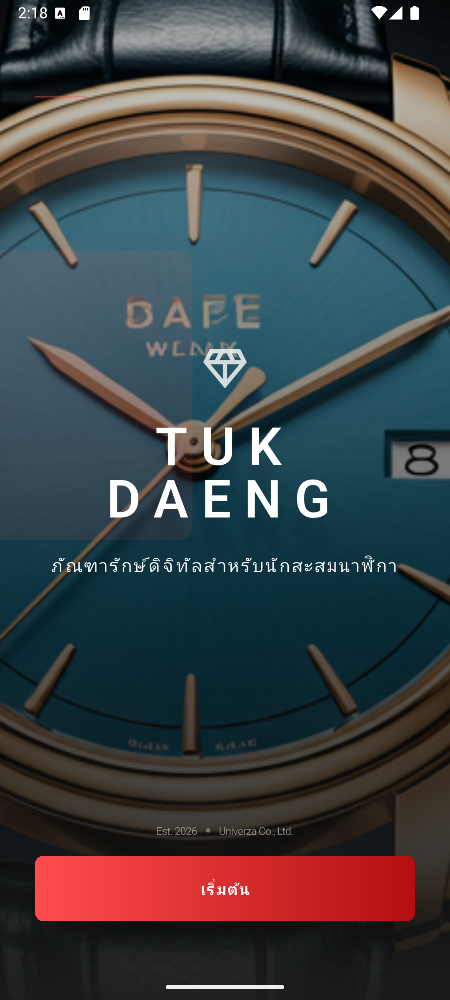
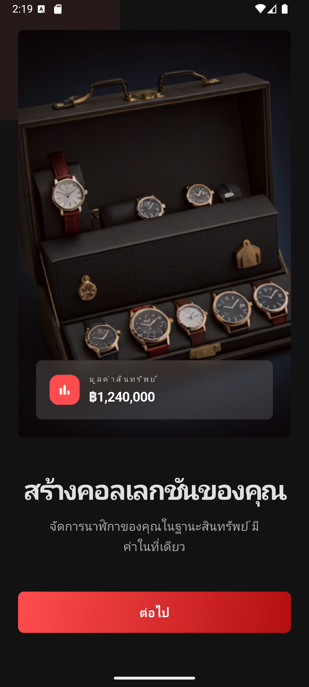
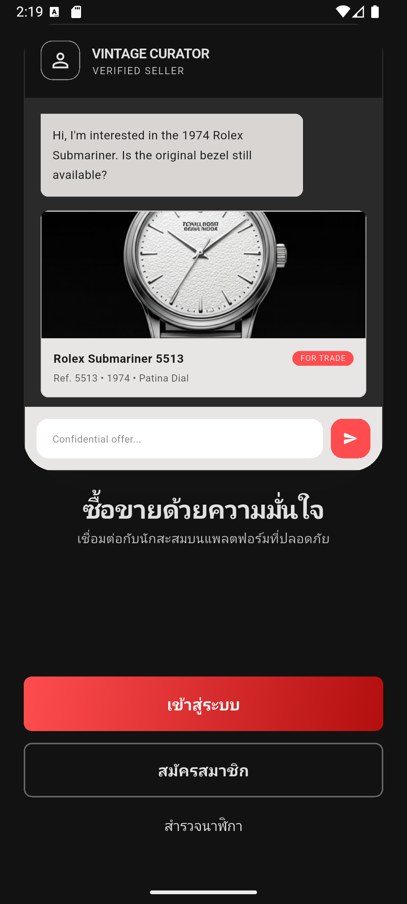

บทที่ 01
เปิดแอปครั้งแรกและหน้าเลือกเข้าใช้
Onboarding
TUK DAENG
เมื่อเปิดแอปครั้งแรกจะพบ Splash → แนะนำแอป → หน้าเลือกวิธีเข้าใช้: เข้าสู่ระบบ / สมัครสมาชิก / สำรวจนาฬิกา (เข้าโหมด Guest ได้โดยไม่ต้องมีบัญชี)





- แค่อยากดูนาฬิกา → แตะ สำรวจนาฬิกา เข้าโหมด Guest ได้ทันที
- สมาชิกใหม่ → สมัครสมาชิก ด้วยอีเมล+รหัสผ่าน แล้วยืนยัน OTP
- มีบัญชีแล้ว → เข้าสู่ระบบ ด้วยอีเมล+รหัสผ่าน หรือ Sign in with Google
- หลังเข้าสู่ระบบจะเข้าสู่หน้าฟีดหลักของแอปทันที